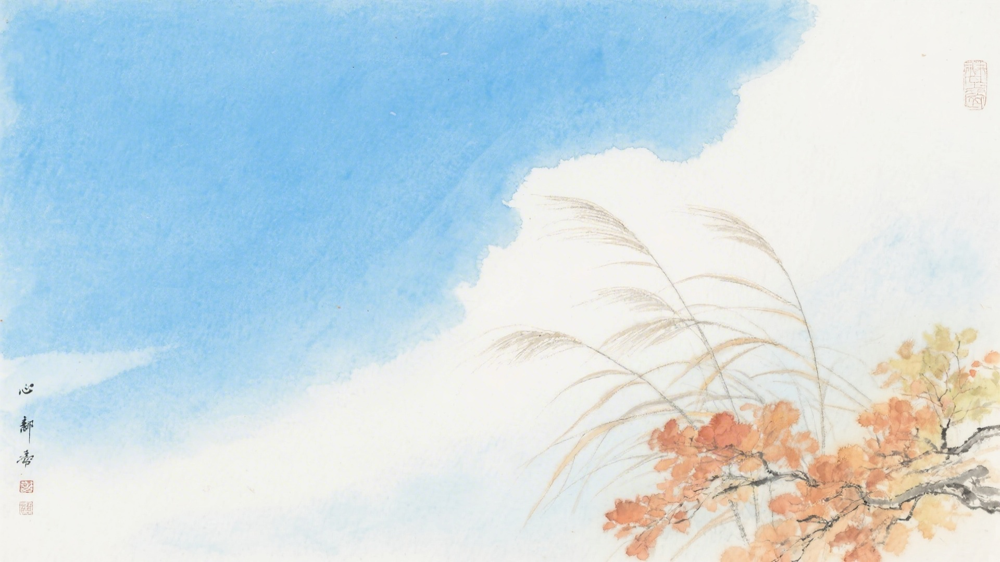
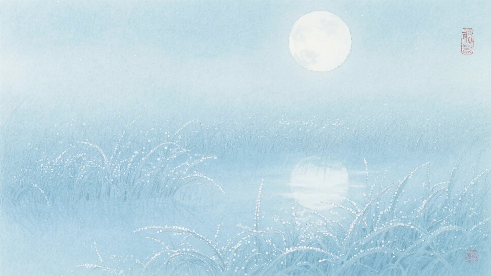
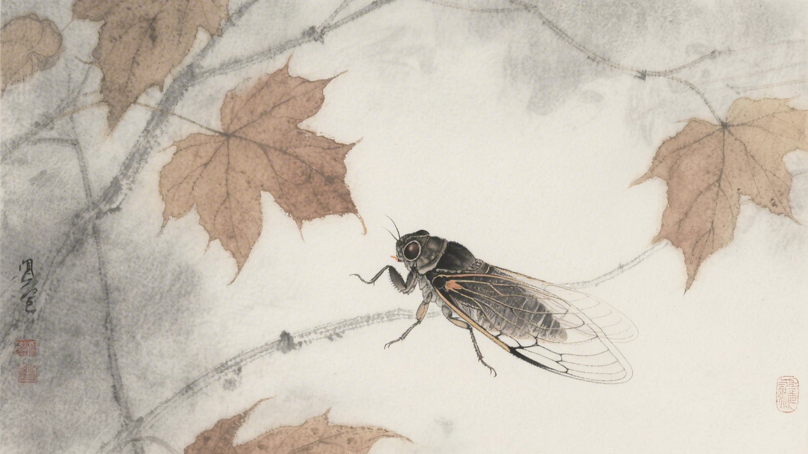
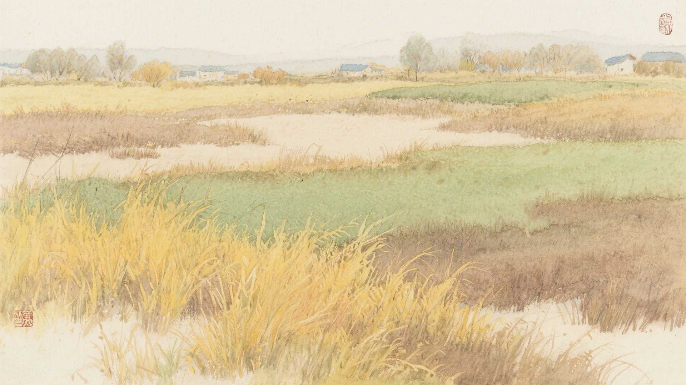
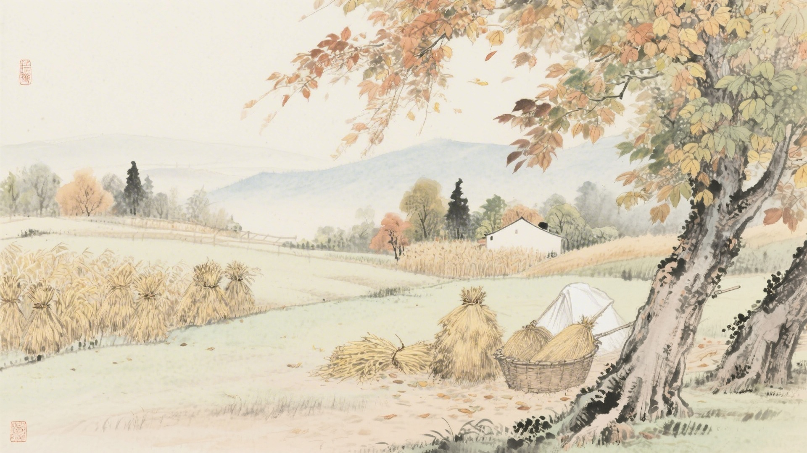

《中国传统色：故宫里的色彩美学》一书中为什么把下面这些颜色归入立秋节气？
窃蓝、监德、苍苍、群青
白青、竹月、空青、太师青
缟羽、香皮、云母、佩玖
麹尘、绿沈、绞衣、素綦
立秋来了，凉风吹起来，蝉叫得凄切，小鹰开始学飞。古人说立秋有三候：凉风至，白露降，寒蝉鸣。这十六种颜色，便从这三候里来。
立秋的"立"，是开始的意思。秋天从这天开始，虽然还热，但风向变了，早晚凉了。颜色也跟着变，从夏天的浓烈变得清淡，从热烈变得沉静。
对应：立秋节气一候"凉风至"的起、承、转、合四色。
色彩意象：凉风吹来，天色渐高。
从淡蓝到深蓝，是凉风吹过的色彩变化，也是立秋时节最清朗的天空。

对应：立秋节气二候"白露降"的起、承、转、合四色。
色彩意象：白露凝结，月色如水。
从白青到深青，是白露凝结的色彩变化，也是立秋时节最朦胧的月光。

对应：立秋节气三候"寒蝉鸣"的起、承、转、合四色（其一）。
色彩意象：寒蝉凄切，秋意渐浓。
从素白到青白，是寒蝉鸣叫时的色彩变化，也是立秋时节最凄美的意境。

对应：立秋节气三候"寒蝉鸣"的起、承、转、合四色（其二）。
色彩意象：秋草渐黄，绿意犹存。
从淡黄到深绿，是秋草变化的色彩变化，也是立秋时节最丰富的层次。

立秋这天，民间有"贴秋膘"的习俗。夏天瘦了，秋天要补回来。颜色也要贴膘，把夏天晒褪的颜色补回来。红的补红，青的补青，黄的呢，本来就黄，再黄一点也无妨。

颜色也懂得换季。它们把夏天的浓艳收起来，把秋天的清淡拿出来。像是换了衣裳，从夏装换成秋装。红的换成青的，绿的换成黄的，一个节气一个颜色，一年换四次。
（以上解读不代表原书观点）